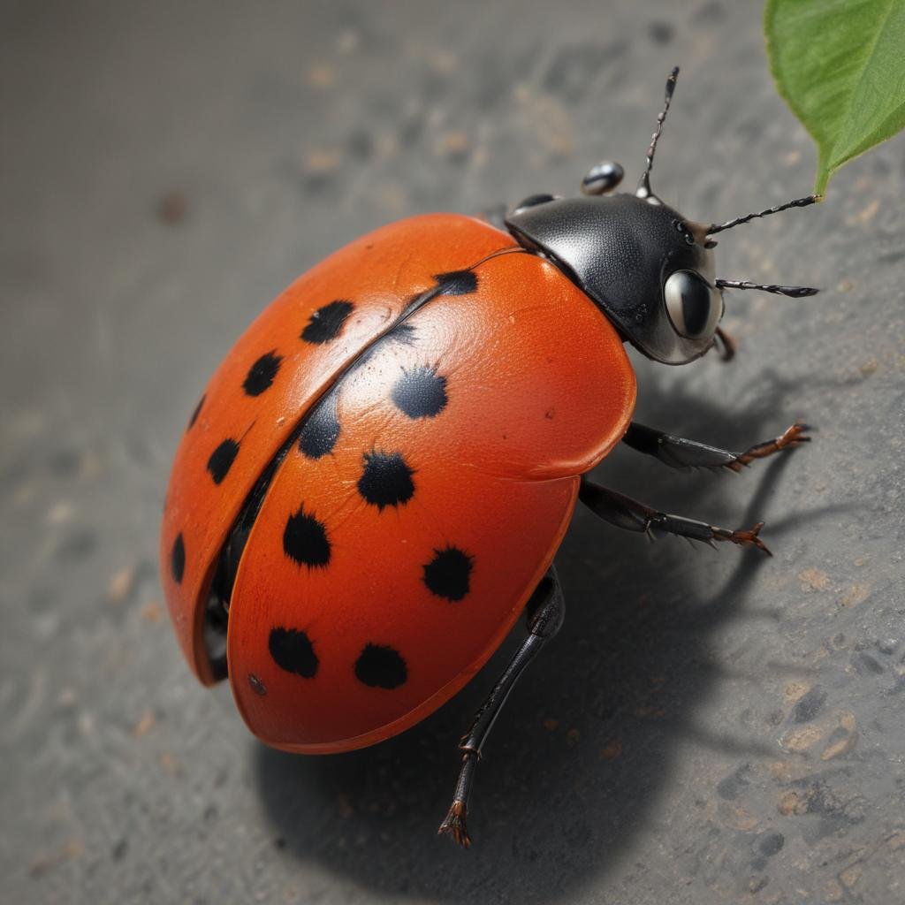

곤충의 특별한 점 🌟
곤충들은 지구상에서 가장 다양한 생물군으로, 각기 다른 환경에서 독특한 방식으로 살아가고 있어요.
곤충은 몸이 머리, 가슴, 배 세 부분으로 나뉘어 있고, 다리가 6개인 동물이에요.
대부분의 곤충은 날개가 2쌍이고, 더듬이가 있어요.
곤충은 우리 생활과 자연에 매우 중요한 역할을 해요. 꽃가루를 옮겨주고, 흙을 비옥하게 만들어주고, 다른 동물들의 먹이가 되기도 해요.

곤충이 아닌 동물들 🦎
곤충처럼 보이지만 사실은 곤충이 아닌 동물들도 있어요!
- 거미: 다리가 8개이고 몸이 머리가슴과 배 두 부분으로 나뉘어 있어요.
- 지네: 다리가 많고 몸이 여러 마디로 이루어져 있어요.
- 전갈: 8개의 다리와 집게발, 그리고 독침이 있어요.
- 진드기: 아주 작고 8개의 다리를 가지고 있어요.

곤충 퀴즈 ❓